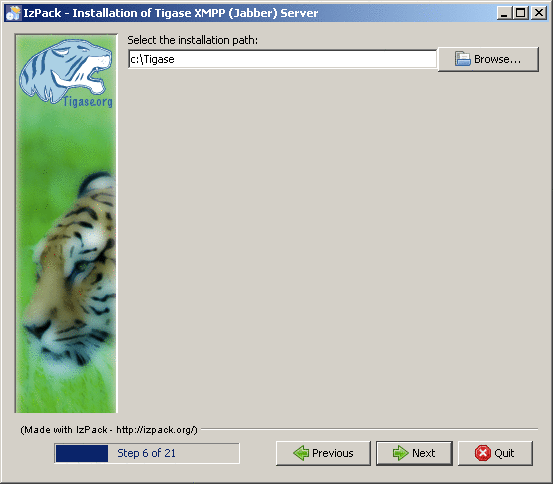
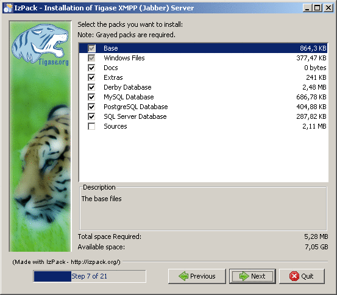
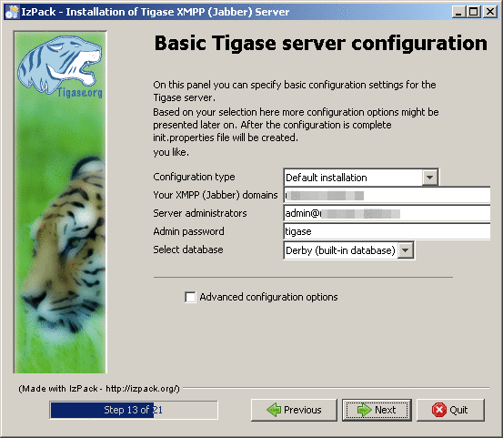
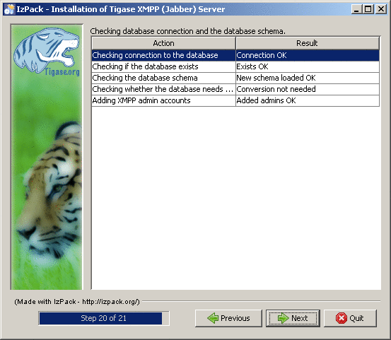

If you don’t want to install Tigase using a manual method, you can use the GUI installer. It not only copies server files to preferred place, but also assists with configuration of the most important parameters and database setup. Therefore we recommend this as the way to install Tigase.
Before you can start the GUI installer you will need to have working Java environment. Although installer only requires JRE (Java Runtime Environment), server needs the JDK (Java Development Kit). Please do note that currently minimal JDK version Tigase is capable to run on is 1.6. If you don’t have JDK installed it is the right moment to do it. Visit the Java downloads site From the list of available packages select newest JDK version (if you don’t have a specific need to use J2EE then choose a package without it). After configuring JDK you can download the Tigase GUI installer and start the server installation process. It is also important to set the JAVA_HOME environment correctly.
You can always find the newest Tigase packages in the download section. When you enter the page, you will be presented a list of files to choose from. You may be confused at the beginning as there are lot of choices, but all Tigase binary packages have conventional names, which help to differentiate them easily. They are of form tigase-server-x.y.z-bv.ext where 'x', 'y', 'z' and 'v' are version numbers and they change from a release to release. Ext is the file extension which in the case of our GUI installation program is .jar. We recommend you to download the latest version (highest version number) of the server as it contains latest functions and improvements
On most systems installing JRE or JDK creates a default association which allows to run the .jar file by just double clicking on it. However if nothing happens when you do it there is a way to do it manually. Perform the steps in the following order:
If you are on Windows system you can use the command prompt to run the installer directly using the java command.
- Click on the Start menu and choose Run… (You can also use the Win+R shortcut).
- You will be presented with a dialog box where you can enter a command. Type "cmd" (or "command" in the case of windows version older then 2000) and submit the window. If you are on a Linux system, you can use a terminal. It should be easily discoverable as it is a standard tool on this platform. Find and run it.
Command prompt / terminal will appear. You will be able to check a whether your Java environment is working. To do it type the
java -version
command and press Enter. If the message says that the command is not recognized then your Java installation may be corrupt or not configured properly. For correctly setting up JRE/JDK including setting the JAVA_HOME environmental variable please check documentation provided on the JDK download site. Also when the command succeeds please check if the printed version number fulfills Tigase requirements. When many versions of JDK/JRE are installed on one machine java command will need to be invoked with the full path it is placed on.
When you have no doubt that you can run the correct Java launcher, you may start the installer i.e. for the file tigase-server-4.1.0-b1315.jar downloaded to the c:\download directory type the following command:
java -jar c:\download\tigase-server-4.1.0-b1315.jar
This command should start the installer or print an error message explaining what is the cause of problem.
Please note that this tutorial covers only the basic installation mode. Some screens have been omitted because they contain advanced options which are not shown in simple installation mode. Others such as progress of copying files and summary info on the other hand are self explanatory and will also not described.

This screen is only shown when JDK has not been selected automatically. When your JAVA_HOME path is properly set, it will be auto-detected saving you some configuration time. If you are reading this step and still don’t have JDK installed, then go back to the prerequisites section where you can find some info on how to prepare your system for Tigase installation. Sometimes your system will be configured in a way that prevents detection of JDK path. This often happens when you install JRE after installing JDK. You will have to find JDK directory yourself. It is by default installed in the Program Files\Java directory of your system drive.

Recommended practice is to choose both installation and configuration of the server as manual configuration is more complicated, time consuming and error-prone.

This screen shows some information about Tigase which may help you understand what it is and how it can help to take advantage of the XMPP protocol. It is important that you read all information’s appearing on the installer screens, as they contain valuable hints and most recent information.

This is the point where you choose where do you want you server to be installed. Recommended path should not contain spaces, as it may be reason of some strange path problems. In the case of installation on Windows it should be installed on a short path because there is a limit of path lengths. Also note that on Windows Vista there may be some problems with making the server work while installed in the Program Files directory, related to the working of UAC mechanism, so better don’t install it there. If you don’t want are unsure about where to place the server, you can always leave the default selection.

Next important step is package selection. Note that some choices are grayed out and you cannot change them as they are essential. Packages consist of documentation, database drivers, sources of the server and some extras. When you select an item, you will be presented with a short description of it’s content.
We recommend that you install documentation. It contains valuable resources which may be very helpful in administration and general use of the server.
If you have a working database platform that you want to use for storing all important user information in, just select appropriate db drivers. If you don’t have a database engine, you can use the included derby database along with also included drivers.
If you are a developer and you want to be able to check how the server is working or if you want to help with the development, you can install also the included source codes.

On this screen you will find most important basic configuration options. As this guide covers only non-advanced set up - disable the advanced configuration checkbox.
From here you can select which components will be installed. For most installations the default selection will be most appropriate. You can expand the list to check if any of the other options will better suit your needs.
It is very important that you enter your domain name correctly here.
- On Linux like system you can use the hostname command and extract the domain part from the output. If you use the -f parameter then you will get the fully qualified domain name.
- On Windows use the standard System control panel applet. You will find your domain (computer name) in the Computer name tab.
On the other hand if you want to use Tigase virtual domain support and you have your DNS system configured properly, then you can put your virtual domains list here. Just separate them by comma characters. For example if your server is seen from the outside as veloci.tigase.org, mammoth.tigase.org and tigase.org then you can use Tigase instance as if it were three separate instances. In reality it will be one server, however admin@veloci.tigase.org will be a different user then admin@tigase.org. This feature allows to use one server to separate user groups, for example ones from different organizations.
When you have your domain name just enter it in the domain text box. Next parameter will be the JID of server administrator. Standard practice is to use admin, however you may choose any name you like. For example for domain tigase.org the full admin name would be admin@tigase.org. Just stick your chosen name and domain together using the @ character as separator.
Using this information your XMPP admin will be automatically added to the database, so after installation you can just login into the server without registering admin first manually.
You should also select a database which will be used for storing user info. Default is the Derby database, if you don’t need anything special just leave it as it is. Just select a new password as the default one is easy for a hacker to guess.
Important notice: Tigase installer does not contain the actual databases, only drivers allowing db access. The only exception is Derby database, which is included in JDK. It is automatically configured by installer, in case of other databases you will need to configure them by yourself.

When you switch to this screen an automatic test of database configuration will be started. It consists of few steps which will be executed in order. After testing connection and configuring schema, admin users will be added.
What to do if any of the tests will fail?
- If you decided to use your own database, check if you entered correct password and whether your database is running.
- If you use the embedded Derby database then probably your problem is more complicated. An error may indicate a bug in the installer. You may report it to one of Tigase developers.
If you cannot go beyond this step after trying to resolve database problems you may try manual installation mode.
When you perform all those steps altogether with choosing Start Menu location and other basic actions you will be informed that installation process is complete. You can now use your Tigase server. There are some post installation actions you may want to perform. They are briefly presented below.
Part of the installation process is the selection of Tigase base directory. This is where you can find all important server files. The installer will create some configurable shortcuts in the Start Menu. You can navigate to the menu and use it to start the server. To run the server manually:
- On a Linux system you may start the server using the tigase file found in the scripts sub-directory of Tigase server base directory. You will need to select the type of linux you have, debian, gentoo, mandirva, or redhat, and use the script located in the init.d folder. In the root server directory type the following command:
./scripts/{OS}/init.d/tigase start etc/tigase.confOf course if you have a custom config file then change last command appropriately.
- On a Windows platform you can use a bat file to run the server. There is a run.bat file in the Tigase root directory. Just double click it in Explorer or run it from command line to start the server. A window with server log output will pop-up.

On Windows you can install Tigase as a service. To do it use the InstallTigaseService.bat batch file found also in server root directory.
In this mode service will be running in background and will be controllable from the Services management snapshot. To launch the tool right click on the Computer icon on the desktop. Choose the Manage action. It will run the Computer management graphical configuration program. On the left side choose the Services item. You will be shown with a list of services. Here you can find Tigase service when it will be installed.
To uninstall Tigase service use the UninstallTigaseService.bat file from Tigase server root directory.